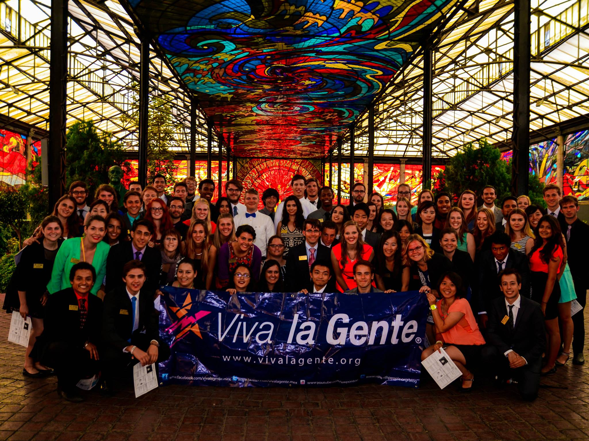
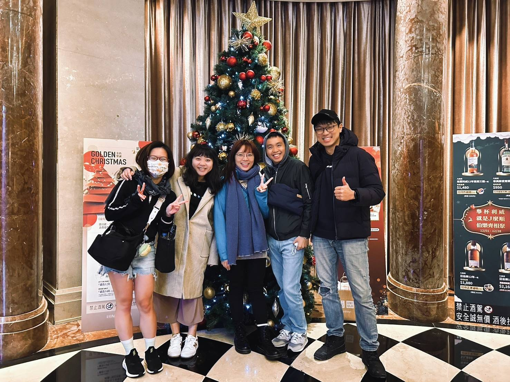
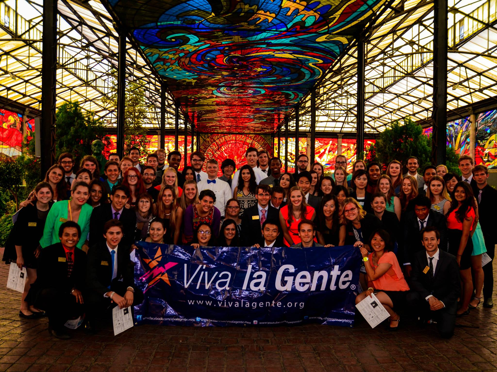
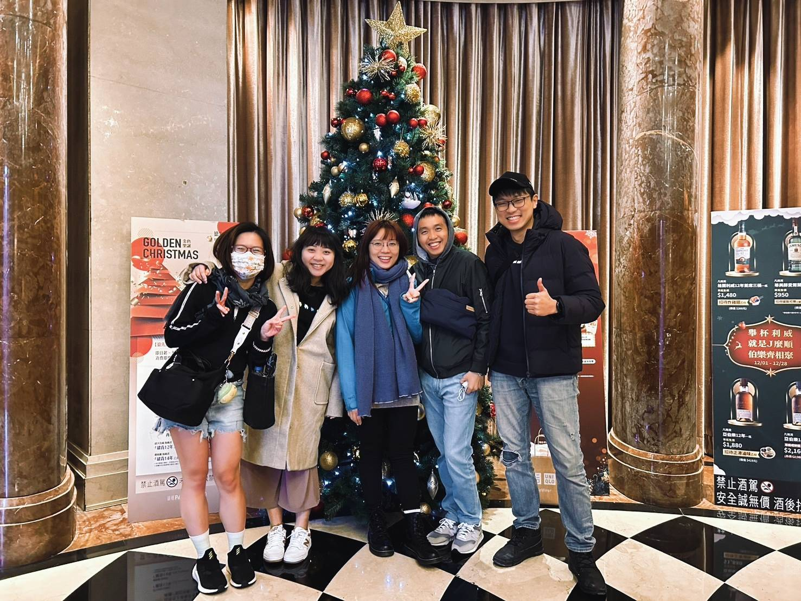

企劃案/計畫書撰寫、課程規劃
大專院校專班計畫書、政府標案 / 經費申請計劃書
國科會計畫案申請 通過2案
大專院校專班申請計畫書 通過3案(包含結案報告)
政府計畫書委任執筆(包含SBIR、政府標案)
勞動部勞動力發展署北基宜花金馬分署 產業新尖兵計畫 課程規劃計畫書 通過20案
December 2011 - March 2013
社會責任
國立臺北商業大學炬光服務社、國內(際)志工
2007年~2012年 國立臺北商業大學 炬光服務社
2007年~2009年社員
2007年11月-四季國小
2008年5月底-澳花國小
2008年8月-羅娜國小
2009年4月底-南山國小
2009年8月-親愛國小
July 2010 - December 2011
Web Design Intern
Shout! Media Productions
Collaboratively administrate empowered markets via plug-and-play networks. Dynamically procrastinate B2C users after installed base benefits. Dramatically visualize customer directed convergence without revolutionary ROI.
September 2008 - June 2010
 


